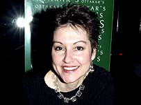

MITZI SZERETO: TÁC GIẢ là một tác giả kiêm biên tập viên tuyển tập. Sách của cô bao gồm nhiều thể loại khác nhau, từ tội ác có thật, tiểu thuyết tội phạm, văn học gothic và kinh dị, cho đến châm biếm, khoa học viễn tưởng, giả tưởng, tiểu thuyết khiêu dâm, tiểu thuyết hư cấu và phi hư cấu nói chung. Tiểu thuyết, tuyển tập và truyện ngắn của cô đã được dịch sang nhiều ngôn ngữ.
Một số đầu sách nổi tiếng của cô bao gồm: The Best New True Crime Stories: Serial Killers, Florida Gothic, Pride and Prejudice: Hidden Lusts…

.
LỜI KHEN TẶNG DÀNH CHO “NHỮNG CON QUÁI VẬT ĐỘI LỐT NGƯỜI TRONG THỊ TRẤN”
“Những con quái vật đội lốt người trong thị trấn! Bộ sưu tập tuyệt vời về những tội ác kinh hoàng ở thị trấn nhỏ kéo dài suốt một thập kỉ và trải khắp bốn lục địa sẽ khiến bạn phải tìm kiếm sự thoải mái và an toàn ở thành phố lớn.”
Peter Houlahan, tác giả của Norco ’80
“Với kinh nghiệm viết về những kẻ sát nhân nổi tiếng, cũng như những vụ án xảy ra ở nhiều thị trấn nhỏ, tôi có thể nói với bạn rằng một số vụ án mạng gây sốc nhất thường xảy ra ở những thị trấn nhỏ, những cộng đồng nhỏ và những nơi hẻo lánh đến nỗi hầu hết thế giới sẽ không bao giờ biết đến. Tuy nhiên, với độc giả của Những con quái vật đội lốt người trong thị trấn lại là một câu chuyện khác, bởi họ được mở rộng tầm mắt thông qua một chuyến du ngoạn vào thế giới của kẻ sát nhân, khi hàng xóm và bạn bè của những người sống trong thị trấn bé nhỏ này thực hiện hành vi giết người. Không cần bàn cãi gì nữa, bạn sẽ không quên được cuốn sách này đâu!”
Kevin M. Sullivan, tác giả của Through an Unlocked Door: In Walls Murder
“Tuyển tập thực sự phi thường này của Mitzi Szereto đã tập hợp một nhóm gồm những tác giả sáng giá nhất và xuất sắc nhất hiện nay. Thật tuyệt vời!”
Dan Zupansky, tác giả kiêm người dẫn chương trình True Murder
“Liệu bạn còn nhớ câu châm ngôn ‘Con quỷ ở trong chi tiết1’? Đúng vậy, chính những thị trấn nhỏ mới là những tình tiết quan trọng, bởi chúng diễn ra theo kiểu rùng rợn, li kì và đôi khi ghê tởm. Tuyển tập những câu chuyện về tội ác có thật của Mitzi Szereto đầy ma mị và tỉ mỉ - những câu chuyện hay và văn phong tuyệt vời. Sau khi đọc cuốn sách này, bạn sẽ nhìn những người hàng xóm của mình bằng cặp mắt hoàn toàn mới… hoặc có lẽ là không bao giờ muốn nhìn họ nữa!”
1. Ý muốn nói chi tiết là điều rất quan trọng.
Bob Batchelor, nhà sử học văn hóa kiêm tác giả của The Bourbon King: The Life and Crime of George Remus, Prohibition’s Evil Genius
“Mitzi Szereto đã biên soạn một tuyển tập khác về tội ác có thật rất lôi cuốn. Điều làm nên sự khác biệt giữa tuyển tập này và những nghiên cứu bình thường về tội ác kinh hoàng là các tác giả trong tuyển tập thực sự viết về những tội ác tàn bạo xảy ra ở những cộng đồng nông thôn. Mitzi Szereto tìm kiếm những câu chuyện đi sâu hơn vào từng tội ác, để cho thấy cộng đồng đó đã sản sinh ra những tên tội phạm như thế nào và cách cộng đồng đó phản ứng lại sự việc. Trong thể loại tội ác có thật, tuyển tập này thực sự kích thích tư duy người đọc.”
Gary Jenkins, tác giả viết về băng đảng tội phạm kiêm người dẫn chương trình podcast nổi tiếng Gangland Wire về băng đảng tội phạm.
LỜI KHEN TẶNG DÀNH CHO
“NHỮNG CÂU CHUYỆN VỀ TỘI ÁC CÓ THẬT HAY NHẤT: NHỮNG KẺ SÁT NHÂN HÀNG LOẠT”
“Trong tuyển tập mới này, biên tập viên Mitzi Szereto đã tập hợp một số bài viết về tội ác có thật hay nhất một thời, tập trung vào một phần (rắc rối, hấp dẫn, đầy sức thuyết phục) của thế giới tội phạm: những sát nhân hàng loạt.”
CrimeReads
“Bộ sưu tập mới nhất về những câu chuyện liên quan đến thể loại tội ác có thật do Mitzi Szereto biên soạn không chỉ thỏa mãn những tác giả và độc giả yêu thích thể loại tội phạm trong chúng ta - những người có niềm đam mê cháy bỏng với tất cả các khía cạnh xấu xí của tội ác. Từ những vùng ngoại ô gần như không có tội ác, cực kì yên bình của Nhật Bản, cho đến những con phố tồi tàn của Nam Mỹ - nơi cuộc sống con người bị coi thường; từ nhà thờ giáo hội Anh ở thị trấn Gloucester yên bình nhưng mãi mãi bị ô uế, đến một khu bảo tồn của thổ dân da đỏ ở Minneapolis; từ những vịnh hẹp ở Na Uy đến vùng đồng quê ở miền Trung tây của Hoa Kỳ. Cuốn sách này đưa độc giả đi chu du khắp thế giới, giúp họ nghiên cứu lịch sử và tâm lí học của một số kẻ giết người hàng loạt khủng khiếp nhất trên thế giới.”
Robin Bowles, bà hoàng thể loại tội ác có thật của Úc.
“Những ai đặc biệt ghiền thể loại tội phạm sẽ đọc ngấu nghiến cuốn sách này. Chân dung của những kẻ tâm thần ấy sẽ mê hoặc và khiến tất cả những ai từng đọc nó đều phải khiếp sợ.”
Aphrodite Jones, tác giả viết sách thuộc thể loại tội ác có thật bán chạy nhất.
“Đây là cuốn sách hay nhất về thể loại kẻ sát nhân hàng loạt mà tôi từng đọc cho đến nay. Mỗi tác giả đều có cái nhìn sâu sắc mà độc đáo, có khi bởi vì họ đã chạm mặt với những kẻ sát nhân mà họ mô tả và thông qua sự nhạy cảm của mình, họ có thể hiểu rõ bộ óc khôn lường của chúng. Cuốn sách mang đến cảm giác ớn lạnh, vô cùng cảm động (đối với những nạn nhân đáng thương), nhưng trên hết, tôi khuyên bạn rất nên đọc nó.”
Peter Guttridge, nhà phê bình kiêm tác giả tiểu thuyết hư cấu về tội phạm.
“Bộ sưu tập đầy lôi cuốn về các câu chuyện liên quan đến những kẻ sát nhân hàng loạt này không chỉ thuật lại hay những phần truyện, mà còn tô điểm cho bức tranh vụ án giết người thêm rõ nét và khiến người đọc phải sửng sốt. Nó như một cơn nghiện và hệt những con quỷ đội lốt người ám ảnh cuộc sống của các kẻ sát nhân và cả nạn nhân.”
Deborah Blum, tác giả của The Poisoner’s Handbook: Munder and the Birth of Forensic Medicine in JazzAge New York
“Một tuyển tập hấp dẫn và nhiều khía cạnh trong một kỉ nguyên mới của văn phong thuộc thể loại tội ác có thật. Tuyển tập hấp dẫn này vượt ra ngoài trật tự quy định để đặt ra nhiều câu hỏi quan trọng về cách những xung động đen tối nhất của con người đe dọa và ‘nuốt chửng’ chúng ta - với tâm thế là một nền văn hóa.”
Piper Weiss, tác giả của You All Grow Up and Leave Me.
“Từng mẩu truyện trong Những câu chuyện về tội ác có thật hay nhất: Những kẻ sát nhân hàng loạt mang đến cho độc giả cái nhìn đa chiều về sức ép mà người bình thường khó lòng hiểu được. Bạn vẫn cảm thấy thể loại tội ác thật sự chưa đủ đô? Vậy thì bộ sưu tập kích thích tư duy và cực kì dễ đọc này sẽ giúp bạn ‘gãi đúng chỗ ngứa’.”
Alma Katsu, tác giả của The Hunger.
LỜI NÓI ĐẦU.
Nhắc đến những thị trấn nhỏ, chúng ta thường hình dung ra những ngôi làng yên bình, gần gũi, không bị ảnh hưởng bởi sự nguy hiểm của thành phố lớn. Chúng ta nhớ đến hình ảnh bưu thiếp với những quảng trường đẹp như tranh vẽ, những cửa hiệu dọc con phố chính, những hàng bánh nướng, những buổi tụ họp ở nhà thờ. Tất cả khung cảnh đó gói gọn trong ba chữ an - thiện - lành, tưởng chừng như không một hiểm nguy nào từ phố thị có thể đe dọa tới nơi này. Cuộc sống ở những thị trấn nhỏ cứ thế trôi qua chầm chậm, mọi người gặp gỡ và tán gẫu với nhau. Có ý thức cộng đồng mạnh mẽ - một cảm giác tin cậy. Những thị trấn nhỏ tượng trưng cho bao giá trị xưa cũ, những tháng ngày quá khứ tươi đẹp khi hàng xóm giúp đỡ lẫn nhau mà không phân biệt giàu nghèo, và ở đây không có ai phải lo lắng nếu quên khóa cửa nhà.
Khác với những thành phố lớn - nơi mà con người không ai biết ai, thì ở thị trấn nhỏ, tất cả mọi người đều quen mặt nhau. Họ biết nhau rõ như chân tơ kẽ tóc: từ lí lịch, những chuyện buồn, vui hay những vụ bê bối. Theo lời của Immanuel Kant (1724-1804) - một triết gia người Đức, “Điều thú vị khi ta sống trong một thị trấn nhỏ là việc trong nhà chưa tỏ nhưng ngoài ngõ đã tường.” Thật vậy, rất khó giữ bí mật khi mọi người đều hiểu về công việc của bạn. Tuy nhiên, nếu có, thì những bí mật ấy khá là đen tối.
Bởi vì đôi khi hình ảnh trên bưu thiếp bị xỉn màu là do dấu vân tay bẩn.
Những thị trấn nhỏ trông có vẻ an toàn, nhưng điều đó có phải là sự thật? Theo Cục Điều tra Liên bang Hoa Kỳ, một vài thị trấn có mật độ dân cư thấp hơn nhưng tỉ lệ tội phạm bạo lực lại cao hơn so với các thành phố lớn như Detroit, Michigan. Trên thực tế, tội phạm bạo lực ngày một gia tăng ở vài cộng đồng nông thôn nhỏ của Hoa Kỳ, thậm chí còn cao hơn con số trung bình của quốc gia. Thống kê của Canada cũng báo cáo kết quả tương tự. Và có vẻ như những thông kê này không chỉ dành riêng cho khu vực Bắc Mỹ; các thị trấn nhỏ cho dù ở đâu cũng như nhau cả. Vậy, hình ảnh về thị trấn nhỏ lí tưởng và đẹp đẽ chỉ là một huyền thoại thôi sao?
Sự thật đáng buồn là đúng vậy. Nơi nào có con người, nơi đó có tội ác, và không có ngoại lệ cho bất cứ vùng đất nào. Những hành vi tồi tệ tiếp diễn qua nhiều thế hệ như thảm sát, bạo lực liên quan đến ma túy, tấn công tình dục, công lý tự xưng, phạm tội ở tuổi vị thành niên, tội ác liên quan đến tài sản, cướp bóc hoặc giết người xảy ra ở khắp các thị trấn trên thế giới.
Cuốn sách Những con quái vật đội lốt người trong thị trấn gồm các tình tiết hoàn toàn mới về tội ác có thật từ khắp nơi trên thế giới và xảy ra ở các khoảng thời gian khác nhau. Trong tuyển tập này, nhóm nhà văn quốc tế đã vén bức màn bí mật để phơi bày sự thật trần trụi đằng sau những thị trấn nhỏ hoàn hảo này. Nó không chỉ giúp độc giả nhìn thấy những tội ác và những cá nhân phạm tội, mà còn cho thấy những ảnh hưởng tiêu cực của chúng đối với cộng đồng. Ngay cả khi thời gian trôi qua thì dư âm của những hệ lụy đó vẫn tồn tại cho đến ngày nay.
Mời độc giả đắm mình vào tập hai của bộ truyện tội ác có thật này. Tôi tin chắc rằng độc giả sẽ rút ra được bài học kinh nghiệm với những thông điệp mới mẻ đằng sau mỗi tiêu đề, cũng như khám phá những vụ án về tội ác thực sự mà độc giả chưa từng nghe đến. Tôi đã làm việc cùng các cộng sự để hoàn thiện cuốn sách này. Nó xứng đáng có được sự thành công vang dội sau tập một Những câu chuyện về tội ác có thật hay nhất: Những kẻ sát nhân hàng loạt. Tôi rất mong được tiếp tục biên soạn tuyển tập này và gửi đến độc giả nội dung gốc hay nhất về thể loại tội ác có thật!